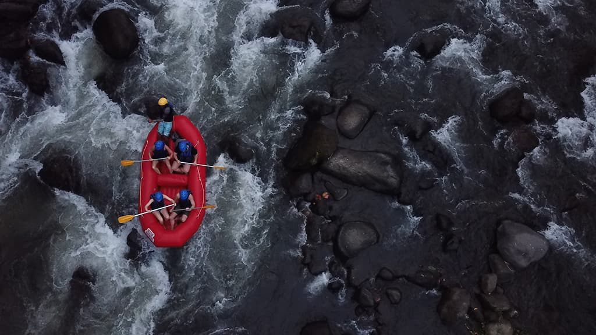
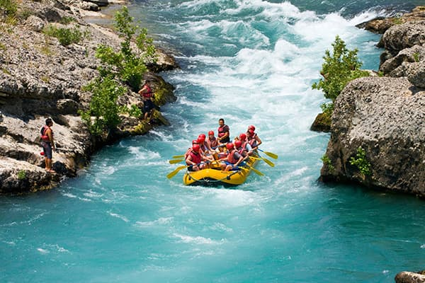

About Us — BlueWave Expeditions
At BlueWave Expeditions, our purpose is to inspire adventure while fostering a deep respect for nature's power and beauty. Our mission is to provide safe, thrilling, and eco-friendly rafting journeys that create lasting memories for families, friends, and explorers alike. We believe in courage, teamwork, and stewardship of the rivers we call home. Our motto: “Ride the Blue, Discover the True.”
History
BlueWave Expeditions was founded in 2025 by a group of outdoor enthusiasts who shared a passion for rafting and conservation. What began as a small local operation on the Snake River quickly grew into a trusted name in adventure travel.
Over the years, we’ve guided thousands of rafters through rapids and calm waters, building a reputation for safety, excitement, and a commitment to protecting our waterways for future generations. Today, we continue to innovate with sustainable practices, community involvement, and top-tier guiding expertise.
Adventure Awaits You!